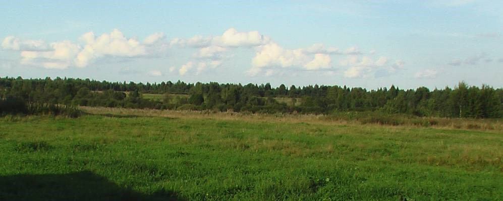
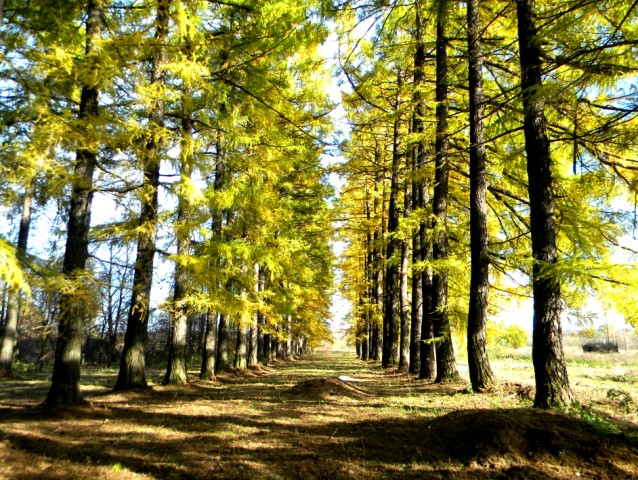

Удивительный памятник природы - лиственничная аллея. Когда-то здесь было сельцо Займище. Аллею высадили в усадьбе во второй половине XIX века.На протяжении нескольких столетий сельцо Займище принадлежало дворянам Шубинским. Предположительно, это сельцо купил в 1718 году у вдовы А.М. Тарасовичевой углический воевода Афанасий Данилович Шубинский.